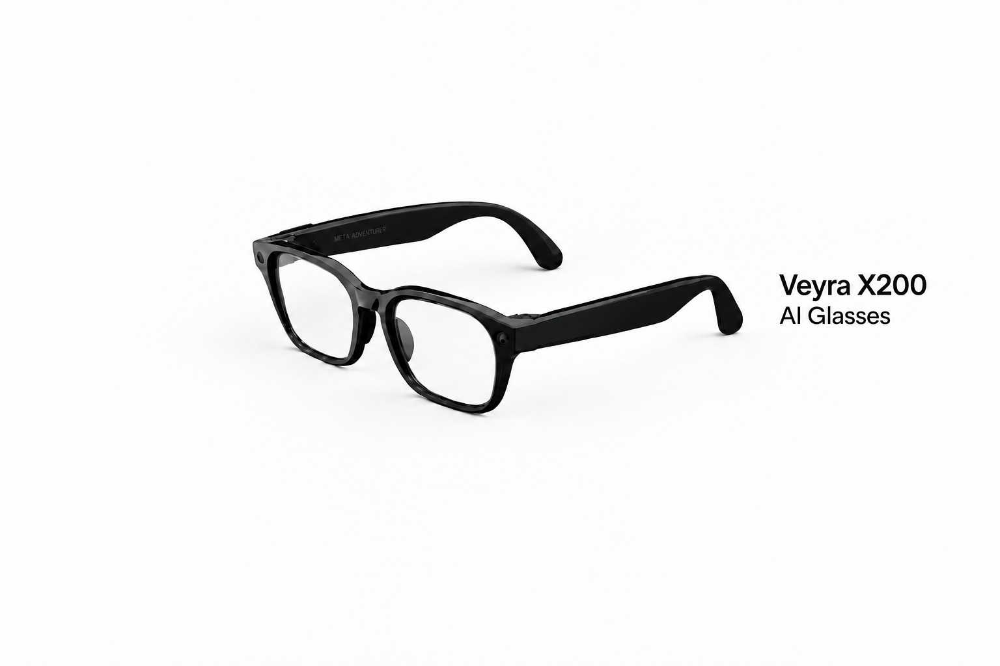

Real-time assistance
Ask questions and receive contextual information while keeping your hands available for the task in front of you.

Veyra X200
Smart glasses designed to deliver useful information, hands-free communication, and everyday guidance through a familiar eyewear form.
Explore the featuresThe X200 brings core AI functions together in a lightweight, wearable format.
Ask questions and receive contextual information while keeping your hands available for the task in front of you.
Use natural voice commands to access information, manage simple requests, and stay connected while on the move.
A classic black frame integrates cameras, microphones, speakers, and processing hardware into a familiar silhouette.
Thank you for reviewing the detailed information about the product. Please close this browser window and return to the study to complete the remaining tasks.